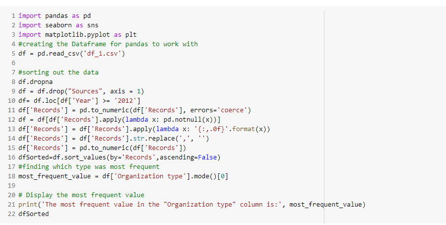
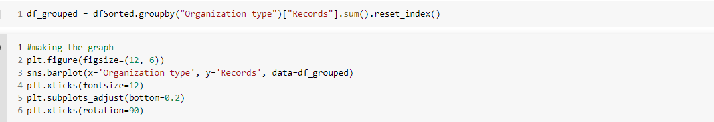

Here is the page where i show you how i got my statistics from my data scource i sued from kaggle.

This screenshot i took was of my code, First i needed to import the dataset, then i had to wrangle a lot of data, about 30,000 columns of data to be exact. but the way the data was collected i didnt have much of a choice but to get rid of a lot of data into just 197 rows of data since there was a lot of "Unknown" in the data. Then after i got past that, i wanted to know which Organization type was most frequent in this data set.

This second screenshot shows how i was able to make the graph with the way i wanted it to show, i wanted to get the sum of all the "records" for their respective Organization type
Contacts
If you have questions feel free to email me @jgnz12345@gmail.com and ill look into it more if needed to.